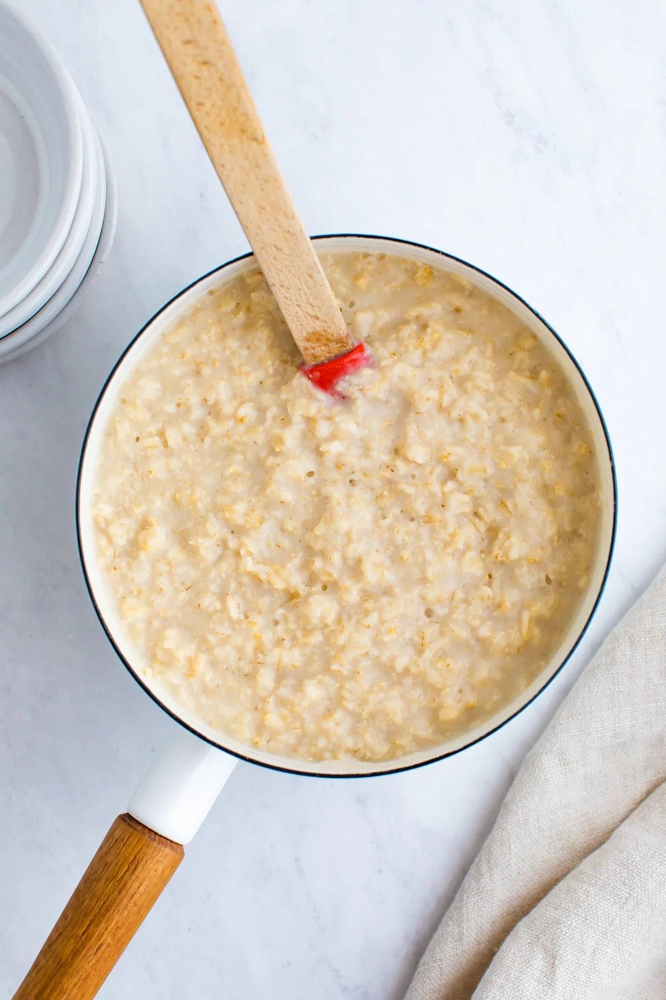

Non-Overnight Oats

Description
So you've given up on life. Maybe the strain of making a proper
breakfast is too great, maybe you'd like to act out your 17th
century English dreams of eating gruel, or maybe you burned off
your tastebuds in a freak accident. Whether you're too busy or
you've gone overboard on your pauper cosplay, this is the recipe
for you.
Ingredients
- 1 cup of oats (quick oats are best, but rolled add that poverty texture)
- 1 cup of milk (substitute water to limit excess flavor)
- 1 bowl
- 1 spoon
Steps
- Add oats and liquid to a pot
- Bring to a boil, then cook over low heat for 20 minutes
- Pour oatmeal into bowl
- Fend off nearby plague mice as you "enjoy" your meal